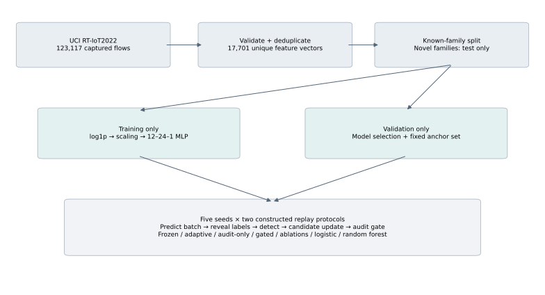

PUBLIC DATA · REPRODUCIBLE EXPERIMENT · LIVE INFERENCE
When a model adapts, the evidence should come with it.
DriftTrust-Audit studies accountable adaptation under changing network traffic. Inspect measured results, examine model updates, and run the actual model on your own flow measurements.
Research deployment using captured IoT testbed traffic. No claim of production access-control certification.
01 / MEASURED EVIDENCE
Performance, with the tradeoffs visible.
Attack is the positive class. Values are means ± sample standard deviation across five seeded splits, with a 0.5 decision threshold.
Loading measured results…
Same held-out records within each seed
Configuration
Attack F1
Balanced accuracy
Attack recall
Benign false alarms
Candidate updates
What does this number mean?
Choose either value or select a configuration in the table. The explanation uses the actual results for the selected protocol.
Means, ±, seeds, protocols and table labels
Mean ± standard deviation
The first number averages five seeded runs. The value after ± is their sample standard deviation, describing how much the runs vary. It is not an error bound on every future deployment.
Seed
A fixed random-number initialization controlling split/shuffle/training variation. Five runs reuse this dataset and are not five independent field trials.
Unseen-family shifts
A deliberately ordered stream alternating known and initially held-out attack families. Each model sees the same test records within a seed.
Stationary known families
Shuffled held-out records from initially known families. An adaptive model can still trigger updates; those attempts are not proof of natural drift.
Candidate updates
Average number of proposed model versions trained, including discarded versions. It can be fractional because it is averaged over five runs.
Attack is the positive class
Label 1 means attack; label 0 means benign. Recall and F1 in this table concern attacks. The decision threshold is attack score 0.5.
What the experiment establishes
Audit-only instrumentation preserves the unguided adaptation prediction sequence while adding an audit trail. The stricter gate often rejects adaptation to unfamiliar traffic to protect fixed reference scenarios. Its lower shifted-stream performance is a material limitation.
Repeated splits share source data and novel-family records. Uncertainty describes split variability, not an independent-population guarantee. Stationary results expose unnecessary update attempts.
02 / DATA AND METHOD
Measured flows. Explicit assumptions.
A traceable public source
RT-IoT2022, UCI repository, by B. S. Sharmila and Rohini Nagapadma, contains captured device traffic with testbed-generated attacks. License: CC BY 4.0. DOI: 10.24432/C5P338.
The CSV has 123,117 rows and 12 observed classes. We select 12 numeric flow features, exclude IDs and labels from inputs, remove 2,098 rows in nine conflicting-label groups, and deduplicate exact input vectors. 17,701 unique vectors remain.
Deduplication changes prevalence substantially. The source’s prose class counts differ from its CSV; our manifest records observed contents and checksums.
A held-out evaluation protocol
Known families are split 60% / 20% / 20% into training, validation, and test sets. ARP poisoning, Slowloris, and Xmas-tree scans are exclusively held out.
The released CSV has no capture timestamps. Four constructed replay regimes alternate known → novel → known → novel. This tests family-composition shifts, not naturally observed chronological concept drift.
Every 32-flow batch is predicted before its labels are revealed. Scaling, training, and reference scenarios never use test vectors. Prompt label availability is an experimental assumption.

1
Actual trust scoring
A 12–24–1 tanh neural network processes log-transformed, standardized measurements. Trust is one minus the attack score. This flow backend is separate from the original synthetic temporal MLP.
2
Detection and learning
Error-rate change and perturbation-attribution shifts trigger candidate updates. Three SGD passes mix recent labelled flows with replay records.
3
Evidence and governance
AJRs record triggers, training IDs, model hashes, fixed-anchor metrics, ECI, and policy outcomes. Audit-only mode records flags; gated mode can reject updates.
03 / PAPER ARTIFACTS
Every chart has downloadable evidence.
Vector PDF and SVG, plus 300-DPI PNG. Aggregate plots use five splits; detailed stream and event plots use the designated primary seed, 11.
Each figure below explains its axes, colors, symbols, data and limits. PDF suits paper submission; SVG is editable vector graphics; PNG is a 300-DPI raster image. Downloading saves files, not reruns the experiment.
Run the same inference and update engine used in the experiment, with real computation in your browser and locally stored model state and audit records.
Enter measured features
Start from a held-out flow, enter measurements, or upload compatible CSV rows. Inspect real scores and attributions.
Replay captured traffic
Process held-out flows through drift detection. Watch updates and acceptance or rejection decisions.
Inspect and export
Download actual session AJRs and verify their hash chain with the included script.
The lab classifies flows but accepts or rejects proposed model versions. A risky flow can be flagged while a later candidate model update is rejected.
12 measured features→Current MLP predicts→Labels arrive→Drift evidence enables training→Policy chooses new or old weights→AJR records evidence
Every input attribute and unitWhat does GitHub Pages run?
GitHub Pages hosts HTML, JavaScript, trained weights and evidence. Your browser’s background worker runs the same engine: inference, drift checks and incremental SGD. IndexedDB stores this browser’s model session and records. No ChatGPT-hosted API is required. Browser-controlled records do not replace independently trusted server evidence.
The fieldbook explains code using real frozen-model inference and labelled teaching exercises. Study progress resets on reload; lab model state is stored locally. Source links open the repository; section links navigate within this page; the DT mark is branding, not a metric.
05 / REPRODUCIBILITY AND SCOPE
What can be checked independently.
Reproduce the experiment
The repository includes the checksum-pinned downloader, split logic, model export, shared engine, report generator, dependency locks, and tests.
Attack labels are network-risk signals, not identity, permission, or authorization ground truth.
One deduplicated IoT testbed dataset and constructed schedules; no enterprise field trial.
Real incident labels can be delayed or wrong; replay uses prompt ground truth.
ECI measures attribution-ranking stability, not explanation correctness.
ISO references are research mappings, not certification.
Hash-linked records detect changes relative to a trusted chain head; storage is not independently immutable.
The lab does not capture browser traffic or enforce enterprise access.
Complete 26-page explanation: Read PDF · Download Word · Open interactive fieldbook. Includes the code flow, every interface control, all twelve attributes, configuration, audit fields and all nine figure explanations.